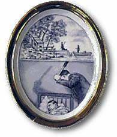
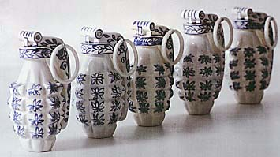
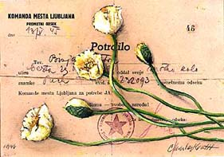
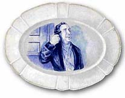
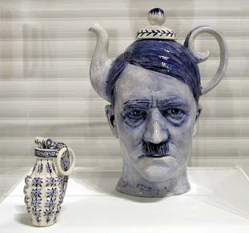
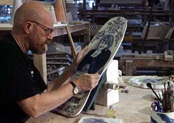

Darkness in Delft
"Never
Look a Gift Shoppe in the Mouth" intones the inscription
on one of Seattle artist Charles
Krafft’s porcelain collector plates. So, it should
come as no surprise that the creator of delft Disasterwaretm
took advantage of a gift -- in the form of a grant jointly administered
by the NEA, the Citizens Exchange Council, and the Soros Foundation
-- to travel to the battle-scarred remains of the former Yugoslavia.
His diplomatic mission to the Balkans was the topic of discussion
at the February installment of Reflex magazine’s superb
Third Tuesday presentations at the Two Bells Tavern.
Krafft has toiled for years in obscurity as a painter
and writer in the Northwest, earning himself the dubious distinction
of being "The oldest promising young artist in Seattle."
Five years ago he joined a guild of lady china painters and acquired
the skills to launch a line of hand painted disasters in delft.
His career has since taken off like the space shuttle Challenger.
"Collector plates are something we’ve all seen in souvenir
shops, or advertised in the back pages of supermarket tabloids
and Sunday papers", Krafft explains."After wading
through the usual swill of bad news and lurid gossip, you can
usually find one of those limited editions of a maudlin portrait
or a rhapsodic pastoral scene to send away for. But you never
find the pictures of the gritty life most of us are living in
the late 20th century on ornamental china because no one would
want to hang it on their walls, much less eat off it".

While that may be true for many people, a growing
number of adventurous patrons soon discovered the twisted irony
of his Disasterware tm; resulting
in a burgeoning international reputation for this often overlooked
Northwest master. His plates debuted at the Davidson Galleries
in 1991, and much to the artist’s surprise, they were instantly
snapped up by some of Seattle’s most prestigious collectors.
Following a few more successful shows in the Northwest, including
a "Metropolitan Mobile Museum" show mounted in the back
of a traveling semi-truck, Krafft turned to the traditional method
of marketing these curios, creating a mail order catalog that
he sent to dealers across the country. The response was phenomenal.
He was commissioned to create a series of plates commemorating
the tragic relationship between the late Sinclair Lewis and Dorothy
Thompson for permanent display at their former Vermont estate,
now a bed and breakfast inn. The catalog also generated interest
among some of America's most prominent galleries, and led to a
one person exhibit at the Garth Clark Gallery in New York. His
work was included in a traveling exhibit of printed pottery, and
slated for display at the London Crafts Council.

Krafft's quirky sensibilities eventually came to
the attention of an equally eccentric group of artists in the
former Yugoslav Federation. Neue Slowenische Kunst (NSK) is a
Slovenian artists collective whose activities were inspired by
the Socialists regime’s banishment in 1983 of the provocative
Slovenian industrial rock band Laibach. In response to the government
edict, a group of young artists, actors, designers and writers
collectively called what their activities Laibach Kunst, to keep
the name of the band before the public. As Laibach achieved international
acclaim, they became a source of national pride, and the ban was
grudgingly lifted after four years. The rebellious collective
then became known as NSK.
NSK contains several diverse elements: LAIBACH,
the Music Department; IRWIN, the Painting Department; a Theater
Department known as NOORDUNG; NEW COLLECTIVISM Graphics; and the
Department of Pure and Applied Philosophy. In accordance with
the Eastern European trend of the time, NSK formally declared
itself an autonomous transglobal state in 1993, complete with
their own passports, currency, postage stamps, diplomats and embassies.
To date, embassies have been established in Moscow, Ghent, Berlin,
Venice and most recently, Sarajevo. The primary purpose of Kraftt's
residency with the group was to help create commemorative china
for use at official NSK embassy functions and state occasions.
Krafft
was on hand for the declaration of an NSK State Territory in Sarajevo
where Laibach performed two free concerts at the National Theater
of Bosnia coinciding with the announcement from the U.S. of the
Dayton Peace Accords. The activities included an art exhibition,
computer links to the NSK Electronic Embassy in Tokyo, and the
issuance of 300 passports. As Krafft observed: "Keeping
culture alive in a situation that severe becomes a means of sharing
in the dignity of purpose that is the real spirit of art after
its pretensions are all stripped away. NSK delivered a musical
and conceptual payload that couldn't have been more perfect for
that time and place. They turned the city’s trauma into
a laboratory where the audience, without being patronized for
its plight, was invited to engineer its own understanding of the
multi-media event they were participating in. Outside the theater,
the world media voraciously harvested sound bites from war victims
about the news from Dayton. Inside, new citizens of an alternative
mental territory were busy digging the loaded irony of Laibach’s
techno deconstruction of Serbian army anthems".
The effect of this event on Krafft was profound.
"The people of Sarajevo were so isolated. It renewed
my faith in art as a means of connecting people to contemporary
culture".

Krafft
used the occasion of his talk at the Two Bells to announce that
the NSK painters group and three Russian guests will visit Seattle
this summer for a summit meeting. As part of Atlanta's international
Cultural Olympiad, the group will travel in two RVs to New York,
Chicago, San Francisco, and Seattle. They plan to engage local
artists, writers and philosophers from different cultural and
political backgrounds along the way in discussions and actions
which will be linked by computer to their exhibitions in Atlanta
and Rotterdam. The event entitled TRANSNACIONALA promises to provide
an important forum for a collaborative exchange with this extraordinary
group of visionaries.
Article and images courtesy Charlie
Krafft.
Related articles:
Been
There, Smashed That
Charles
Krafft - Interview